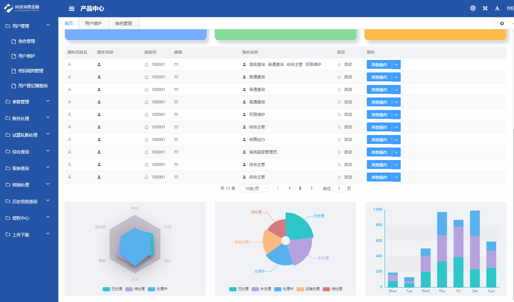
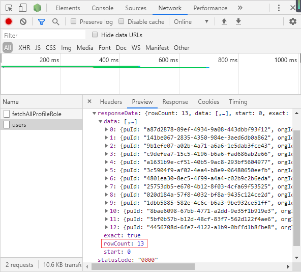

现实的场景中很经常遇到表格el-table数据过多，为了更好的用户体验，所以我们需要用到分页，一般分页可以视数据量的大小可分为前端控制和后端控制。
先看下效果（已做脱敏处理）

图1 前端el-table分页效果
这里就把ElementUi官方的例子进行修改来说明
<template>
<el-table
:data="tableData.slice((currentPage-1)*pagesize,currentPage*pagesize)"
:stripe="stripe"
:current-page.sync="currentPage"
style="width: 100%">
<el-table-column
prop="date"
label="日期"
width="180">
</el-table-column>
<el-table-column
prop="name"
label="姓名"
width="180">
</el-table-column>
<el-table-column
prop="address"
label="地址">
</el-table-column>
</el-table>
<div class="pagination">
<el-pagination
@size-change="handleSizeChange"
@current-change="handleCurrentChange"
:page-sizes="[10, 15, 20]"
:page-size="pagesize"
layout="total, sizes, prev, pager, next, jumper"
:total="total">
</el-pagination>
</template> <script>
export default {
data(){
return{
stripe:true,//是否为斑马纹 table
tableData: [],
currentPage:1,
pagesize:10,
total:0,
}
},
methods:{
handleSizeChange(val) {
this.pagesize=val;
},
handleCurrentChange(val) {
this.currentPage = val;
},
}
}
<script>分页的核心是tableData.slice((currentPage-1)*pagesize,currentPage*pagesize)这一句代码，利用了slice方法把数据源tableData进行分割，但实际上是请求了所有的数据，如图2所示，然后实现前端假分页显示。

图2 实际tableData请求了所有的数据，共13条数据
还有一种分页的思想就是给后台传入如上的参数currentPage和pagesize的值，告诉后台，我们需要[(currentPage-1)*pagesize,currentPage*pagesize]这一个区间的数据，让后台返回来。
这两种方法各有利弊，如果是前者前端控制分页的方法，因为本质是请求了所有的数据，如果这个数据量非常大，涉及到了几百，几千甚至几万数据，第一页的table数据加载的时间就会非常慢，因为它把后面的数据都拿过来了，用户体验非常不好，对内存空间也很不友好。明明只显示了几十条的数据，却为此存了几万条的数据，就好比sql语句的select * from和select [需要的字段] from一样，明显后者的效率会好些。但是它也是有好处的，好处就是如果在数据量小的情况下，第一页table加载速度用户也能接受的情况下，用户之后点击切换页面按钮或者直接跳转到哪个页面都不需要发起请求即可显示出数据，速度非常快。
而后者后端控制分页的情况，每次切换页面都得发起请求，毕竟鱼和熊掌不可兼得，我们只能根据实际情况和用户需求做调整。